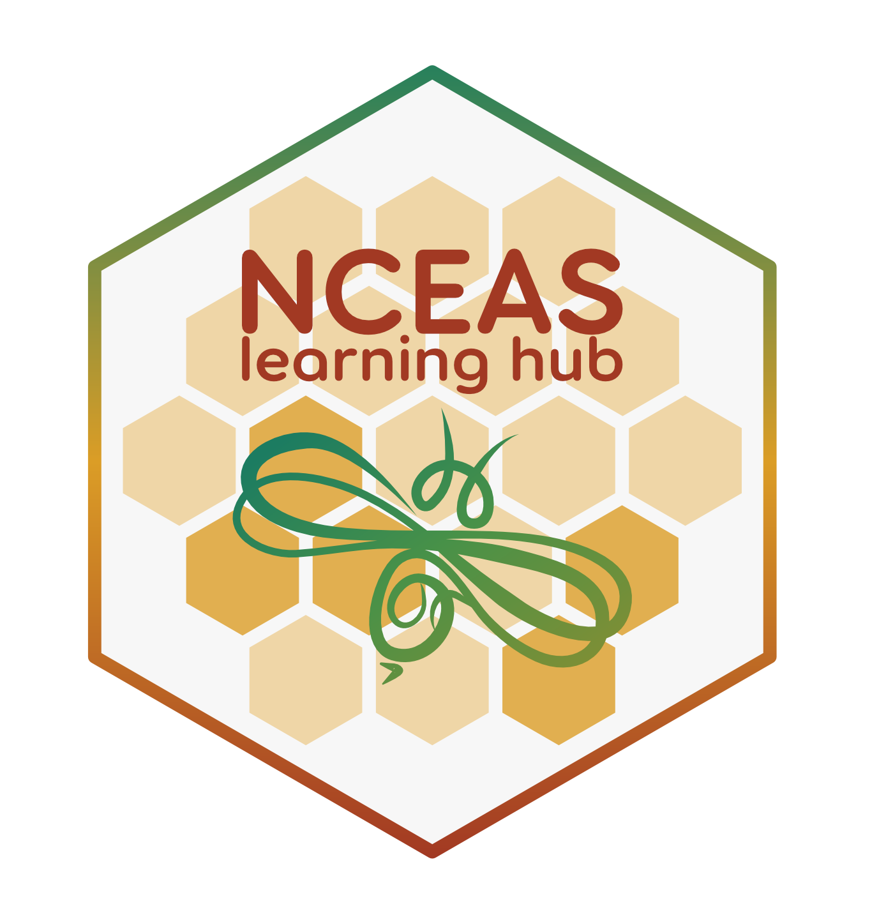

Welcome to the NCEAS Course Catalog!
This website is an effort by the NCEAS Learning Hub Team to centralize the diverse workshop materials and offerings in a way that’s easily maintainable and searchable. It is intended primarily for internal use.
What exactly is this website?
The Learning Hub team comprises educators from a number of different NCEAS-affiliated data science training programs. We all teach similar topics, albeit in different formats and to different audiences. Many discussions have revolved around ways to harmonize our training materials so that modules may be easily interchangeable across programs – because we all have slightly different needs, audiences, and approaches to delivering content, we haven’t pursued this further.
Instead, this website is our attempt at compiling all of our source materials into one, central location. Materials exist across GitHub organizations, repositories, and URLs, have different teams of maintainers, and take slightly different forms (e.g. online books, websites, slide decks). No materials physically live in the repository that hosts this website, but links to teaching materials can be found (and filtered by topic) on this website’s listing page.
Who is the NCEAS Learning Hub team?
The NCEAS Learning Hub team meets regularly to share / discuss data science training and education updates, environmental data science education resources, and other relevant program updates. The following programs have representatives which attend regular team meetings:

The NCEAS Learning Hub is [DESCRIPTION HERE].
Learning Hub Team Representative(s): Camila Vargas Poulsen (she/her)

The Master of Envrionmental Data Science (MEDS) is a professional degree program at UC Santa Barbara, administered by the Bren School of Environmental Science & Management in partnership with the National Center for Ecological Analysis and Synthesis. The 11-month program is designed to train environmental professionals in data science skills. Coursework includes scientific programming, machine learning, remote sensing, spatial analysis, data visualization and much more. The program ends with a 6-month group Capstone project. These projects are proposed by clients with a need for data science solutions to solve their environmental problems or answer environmentally-related questions. Students work in groups of 3-4 during the Winter and Spring quarter and present final results at the end of the year. Explore more on the program’s website for current students.
Learning Hub Team Representative(s): Sam Csik (she/her)

The Long-Term Ecological Research Network (LTER) is [DESCRIPTION HERE].
Learning Hub Team Representative(s): Nick Lyon (they/them)
Why another website?
To be frank, we wanted to avoid yet another website – we discussed (and even tried out) a few alternative ideas including a GitHub repo README, a Google Sheet, a Google Doc, etc. None of those options provided us with quite the flexibility we were looking for (primarily, tagging / filtering materials by topic). After many conversations about not building a website, we decided that a Quarto blog might actually be a solid, easily maintainable option. Quarto has become a true powerhouse of a tool for data science educators, and we all are avid users in our day-to-day operations. We’re giving it a shot, for now, and may modify our approach to material consolidation as time goes on.